The Residual Stream Has a Geometry of Time
Introduction
Not everything your brain is doing right now is in working memory. Early visual processing, syntactic parsing, word retrieval, and motor preparation are all active, but most of it is fast, local, and transient. Working memory is the smaller part: the information that stays available across time, that can guide ongoing reasoning and flexible response. The distinction is not between thinking and not thinking. It is between computation that persists and computation that does not.
Transformers have no explicit analogue of working memory. There is no designated register, no gated state, no mechanism whose purpose is to keep information online across token positions. What there is, at every layer, is a residual stream: a high-dimensional vector that accumulates the contributions of attention and MLP blocks as the model processes each token. The question we asked is whether that stream has any internal temporal structure, meaning whether some of its directions carry stable signals across many positions while others decay within one or two tokens. If so, those long-lived directions would be working-memory-like in a narrow geometric sense: not all of the model’s active computation, but the part that stays available across time.
What we found, in a pilot experiment on Gemma-2-2B, is that the answer is yes, and that the geometry of the persistent directions is counterintuitive in two ways. The persistent directions do not live in a quiet, low-variance corner of the residual stream where the model might stash long-lived signals without disturbing its main computation. They live inside the high-variance subspace that PCA finds, at angles the principal components do not occupy. And they cannot be identified by high variance or by how strongly they align with attention-head outputs. The high-variance axes of the residual stream score better on both criteria, and have no persistence at all. Finding the persistent subspace requires a different objective entirely.
This post reports the experiment: how we measured persistence, what the distribution looks like across direction families, where the persistent directions live in the residual stream, and what a first qualitative look at their activations suggests they might be tracking. We also report, honestly, what we were not able to establish.
How we measured persistence
The core measurement is straightforward. We take a unit vector \(v\) in residual-stream space, a probe direction, and project the residual stream onto it at every token position within a document. This gives a scalar time series, one value per token. We then measure the within-document autocorrelation of that series: specifically, the lag \(\tau\) at which autocorrelation drops below \(1/e\). A direction with \(\tau = 1\) carries essentially no signal from one position to the next. A direction with \(\tau = 20\) carries a recognizable signal across twenty token positions before it fades. We call \(\tau\) the lifetime of a probe direction.
We ran this measurement on Gemma-2-2B, hooking into the residual stream after block 12 (of 26), in the latter half of the network, where representations are generally thought to be most semantically organized. This residual stream has a width of 2304 dimensions. The dataset was 5,000 documents from C4, each truncated to 1,024 tokens, split 80/10/10 into train, validation, and test. Probe directions were always fitted on training data; lifetimes were always evaluated on the held-out validation and test splits.
Before computing autocorrelation, we subtract the per-document mean of each projection, which we call within-document demeaning. Without this, a document that activates a direction strongly throughout (because, say, it is entirely about a single topic) would show spuriously high autocorrelation just from its elevated baseline. Demeaning ensures we are measuring sequential structure, asking whether the projection at position \(t\) predicts the projection at position \(t + k\), rather than document-level offsets.
We fitted three families of probe directions, each asking a different question about the residual stream. Random probes are uniformly sampled unit vectors: they provide an unbiased baseline for what autocorrelation looks like in a generic direction. PCA probes are the top principal components of the residual stream covariance, fitted on training tokens: they are the directions that explain the most variance. Time-lagged probes are the leading generalized eigenvectors of the lagged covariance matrix, fitted to maximize the correlation between projections at positions \(t\) and \(t + k\) across a range of lags. We fitted 512 random probes, 256 PCA probes, and 256 time-lagged probes, for 1,024 total. All deduplicated cleanly at a cosine similarity threshold of 0.95, confirming there were no near-duplicate directions across or within families.
The distinction between PCA and time-lagged probes matters. PCA solves \(\max_{\|v\|=1} \operatorname{Var}(v^\top r_t)\): it finds directions with the highest spread. Time-lagged probes solve a different problem: \(\max_{\|v\|=1} \operatorname{Corr}(v^\top r_t,\, v^\top r_{t+k})\): they find directions where knowing the projection at one position tells you something about the projection many positions later. A direction can score well on one and poorly on the other. High variance does not imply high autocorrelation, and a direction with moderate variance can be highly autocorrelated. The three families are designed to test whether persistence is broad (random probes), whether it aligns with the high-variance residual axes (PCA probes), or whether it requires an objective that directly targets temporal stability (time-lagged probes).
Finally, we ran a document permutation control throughout. For each document, we shuffled the token order uniformly at random before re-evaluating probe lifetimes. This destroys sequential structure while preserving the set of tokens that appear in each document. Any persistence that survives permutation is a property of which tokens appear, essentially document topic, rather than of their ordering. Any persistence that collapses under permutation depends on sequential context. We return to this control in the next section, where it provides the cleanest result in the experiment.
A heavy tail that only time-lagged probes reveal
We evaluated all three probe families on the validation split and measured the distribution of lifetimes \(\tau\) across directions (Figure 1). The result is unambiguous: random and PCA probes are almost entirely short-lived, while time-lagged probes expose a pronounced heavy upper tail.
For random directions, the distribution is flat and low. The 90th-percentile lifetime (Q90) is 1.0, meaning that nine out of ten randomly chosen directions in the 2304- dimensional residual stream carry no detectable autocorrelation beyond a single token position. This is the baseline: generic directions are not temporally structured.
For PCA directions, the result is nearly identical. Q90 \(\tau\) = 1.0, the same as random. The high-variance axes of the residual stream are not, in general, the persistent ones. We will return to this because it turns out to be the most structurally important finding in the experiment; for now the takeaway is simply that PCA and random probes are indistinguishable by lifetime.
Time-lagged probes tell a different story. The distribution has a long right tail: Q90 \(\tau\) = 11.5, Q95 \(\tau\) = 17.0. Some directions carry a recognizable signal across more than a dozen token positions before decaying. The top direction has \(\tau\) = 492, meaning its within-document autocorrelation stays above \(1/e\) for nearly half the document length. Across the full set of 256 time-lagged probes, the Q90 lifetime is 11.5× higher than the random baseline.
This gap is not a fitting artifact. The time-lagged directions were fitted on training data and evaluated on a held-out validation split, so overfitting to the training documents cannot explain the result. The fit itself is numerically healthy: the generalized eigenproblem required no ridge regularization beyond the default, the condition number was 148, and every one of the 256 output directions passed a positive-persistence filter on held-out validation data. The heavy tail is a property of the residual stream, not of the fitting procedure.
The contrast between the three families points directly at the key methodological lesson. PCA and time-lagged probes are both unsupervised methods for finding structured directions in the residual stream, but they optimize different objectives. PCA finds directions that explain the most variance in the residual stream at a single token position. Time-lagged probes find directions whose projections are stable across token positions, so a direction at position \(t\) still carries signal at position \(t + k\). These are different questions, and the residual stream answers them differently: high variance is common, long lifetime is rare, and the two properties do not co-occur reliably. The consequences of that separation are what the rest of this post is about.
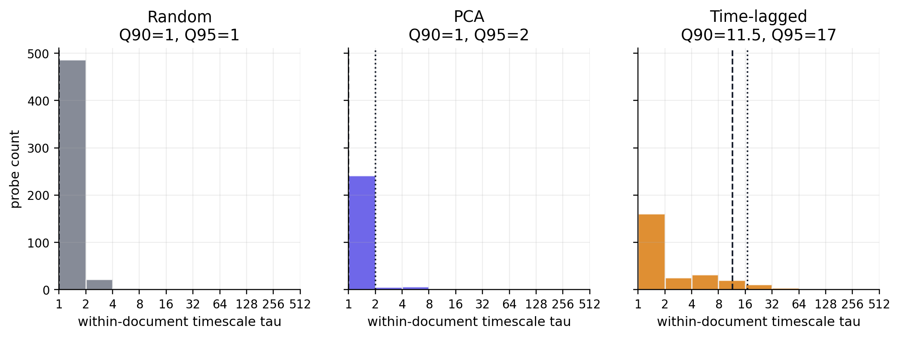
The signal depends on token order, not just token content
The persistence we measured could in principle reflect something simple: a document that is entirely about one topic will have a residual stream that activates the same directions throughout, producing high autocorrelation as a side effect of topical coherence rather than sequential structure. The document permutation control tests this directly.
We shuffled the token order within each document uniformly at random, then re-evaluated probe lifetimes on the shuffled sequences (Figure 2). Permutation preserves the set of tokens that appear in each document, and therefore its topic, vocabulary, and overall content, while destroying all sequential structure. Any autocorrelation that survives is a property of the token multiset; any autocorrelation that collapses depends on the order tokens were seen.
The result is clean. For random and PCA probes, permutation changes nothing: both families have Q90 \(\tau\) = 1.0 before and after shuffling, which is consistent with those directions having no sequential structure to destroy. For time-lagged probes, the top-decile lifetime drops from 17 to 1, a 94.1% reduction. The persistent directions lose essentially all of their signal when token order is scrambled.
This rules out the topic-coherence explanation. A direction that was tracking document topic would survive permutation; these do not. The persistence is in the sequential ordering of the residual stream, not in which tokens appeared.
What permutation does not rule out is more subtle. Natural text has local sequential coherence: sentences follow from previous sentences, paragraphs follow from previous paragraphs, and a model processing such text will produce a residual stream that reflects that structure. The persistent directions we found could be the model actively maintaining information across positions, or they could be a more passive consequence of the model encoding locally coherent surface patterns. The permutation result separates persistence from topic; it does not separate active maintenance from passive reflection. We return to this question in section 10, where a qualitative look at what the persistent directions activate on provides some traction, though not a definitive answer.
Together with the within-document demeaning from section 2, the permutation control provides a joint constraint: the persistence we measure is within-document, sequential, and not explained by document-level offsets or token content. What remains is structure that is specifically tied to the order in which the residual stream evolved across a document.
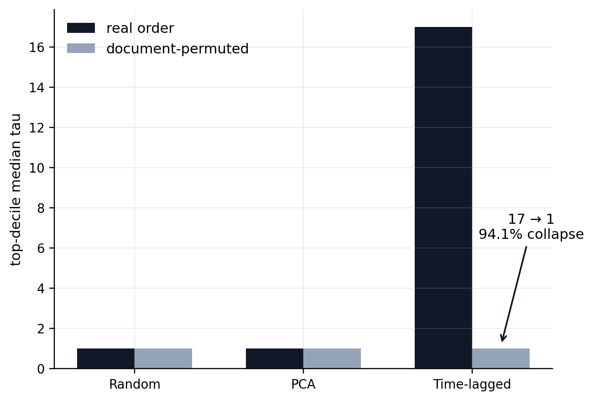
The persistent signal concentrates in roughly 31 nonredundant directions
The heavy upper tail of the time-lagged lifetime distribution is not spread evenly across all 256 time-lagged probes. It concentrates. We measured how many directions are needed to account for 80% of the total lifetime excess, the cumulative sum of \(\tau\) values above the random baseline, across all 1,024 probes in the experiment (Figure 3). That number is 31.
The distribution within those 31 directions is itself heavy-tailed. The single highest-lifetime direction accounts for 44% of the top-31 excess, the top 5 account for 64%, and the top 10 account for 75%. There is a dominant lead direction, and the signal falls off from there. But it does not collapse to one direction repeated in slightly different guises.
We checked this directly. Within the top-31 set, the median pairwise absolute cosine similarity is 0.035 and the maximum is 0.237, well below the 0.95 deduplication threshold used throughout the experiment, and close to what you would expect from near-orthogonal directions in a high-dimensional space. The participation-ratio effective rank of the top-31 set is 28.2 out of 31. These are 28-odd genuinely distinct directions, not one slow axis copied with small perturbations.
The family composition of the top-31 is also consistent with the section 3 result: 30 of the 31 directions are time-lagged probes, and 1 is a PCA probe. The near- absence of PCA directions from the top of the lifetime ranking confirms that high-variance axes are not, in general, the persistent ones, even when selected from the same pool of candidate directions.
Finally, the subspace generalizes. The 31 directions were selected using the validation split; we then evaluated projection collapse on a test split that was never used during direction fitting or selection. The held-out test results match the validation results closely, confirming that we have recovered a stable geometric property of the residual stream rather than a validation-specific artifact. The question the remaining sections address is what those 31 directions have in common, and why they are persistent when the other 993 are not.
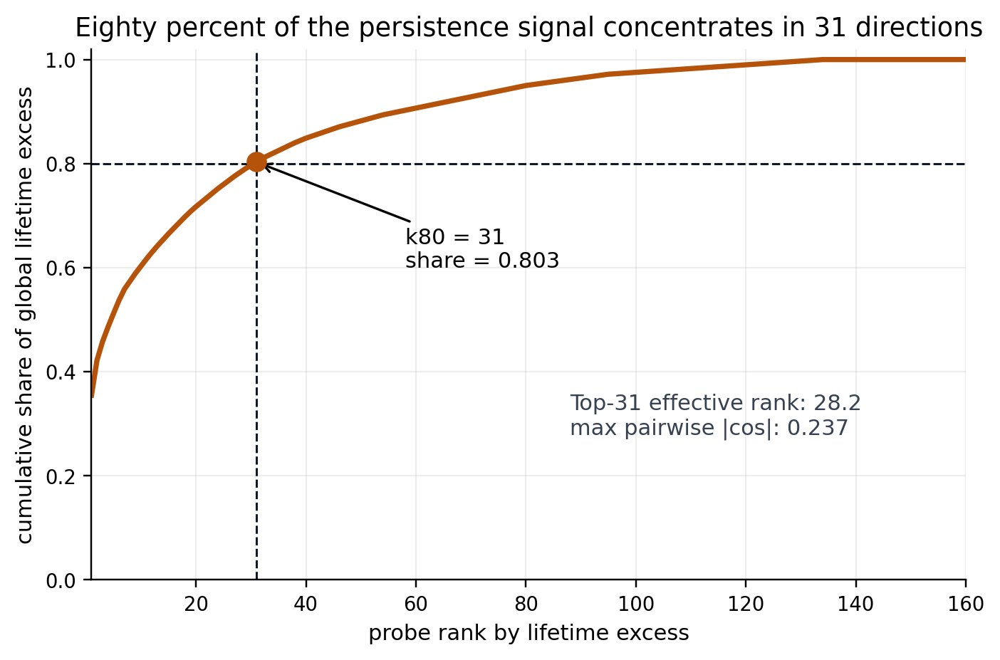
Persistent directions live inside the PCA span, not outside it
Section 3 established that individual PCA axes are not persistent: the 90th-percentile lifetime of PCA probes is 1.0, identical to random directions. A natural inference is that the persistent directions must live somewhere PCA doesn’t look, perhaps in the low-variance tail of the residual spectrum, where the model might quietly maintain long-lived signals without disturbing the high-variance structure. That inference is wrong, and correcting it is the most structurally important result in this experiment.
To test where the persistent directions live, we measured projection collapse: the degree to which a given basis removes the autocorrelation of a set of held-out probe directions. Concretely, we took 128 time-lagged probe directions that were fitted on a separate training shard, directions the basis construction never saw, and projected them into the orthogonal complement of an increasing number \(k\) of basis vectors. If the held-out probes lose their persistence after projection, they were living in the basis span. If they retain it, they were not. We evaluated three bases: the residual- first basis (the leading directions fitted directly on the persistent probes), a PCA basis (the top-\(k\) principal components of the residual stream), and a random-control basis (randomly sampled unit vectors).
At \(k = 256\), the residual-first and PCA bases collapse the held-out probes essentially completely, with collapse values of 0.998 and 0.998 respectively (Figure 4). The random-control basis collapses them by only 0.097 to 0.110, roughly one-tenth as much. The persistent directions are not in a generic subspace; they are in a specific one. And that specific subspace is almost entirely contained within the top 256 principal components of the residual stream.
This is the apparent paradox: individual PCA axes, evaluated one at a time, show no more persistence than random directions. Yet the PCA subspace, taken as a whole, contains the persistent directions almost perfectly. How can both be true?
The answer is that the persistent directions are rotations within the PCA span, not the principal axes themselves, but other directions that lie inside the subspace those axes define (Figure 5). Think of a two-dimensional ellipse. PCA finds its major and minor axes, the directions of maximum and minimum variance. But there are infinitely many other directions that lie within the plane of the ellipse, at angles between the principal axes, that PCA does not identify as special. The persistent directions are the analogue of those intermediate axes: they live in the high-variance subspace of the residual stream, but at orientations that maximize autocorrelation rather than variance. PCA, which optimizes variance, does not find them. Time-lagged probes, which directly optimize lagged covariance, do.
What this rules out is a natural alternative model of how a transformer might maintain long-timescale information: by reserving a quiet, low-variance corner of the residual stream for stable signals that won’t interfere with the high-variance computation happening elsewhere. The data do not support this picture. The persistent subspace is embedded inside the high-variance PCA span, not orthogonal to it. If anything, the PCA span is a marginally more efficient basis for the persistent directions than the residual-first basis itself: at \(k = 64\), PCA collapse reaches 0.841 versus 0.821 for residual-first on the held-out test split, suggesting the persistent directions are somewhat better aligned with the leading PCA axes than with the leading residual-first directions at small \(k\).
The methodological consequence is direct. Scanning the principal components of the residual stream, a common first step in residual-stream analysis, will not find these directions, because persistence and variance are not the same axis. Finding the persistent subspace requires optimizing for temporal stability explicitly, which is what the time-lagged probe construction does. The subspace itself is not hidden; it is hiding in plain sight inside the most visible part of the residual stream, at angles that variance-based methods do not select.
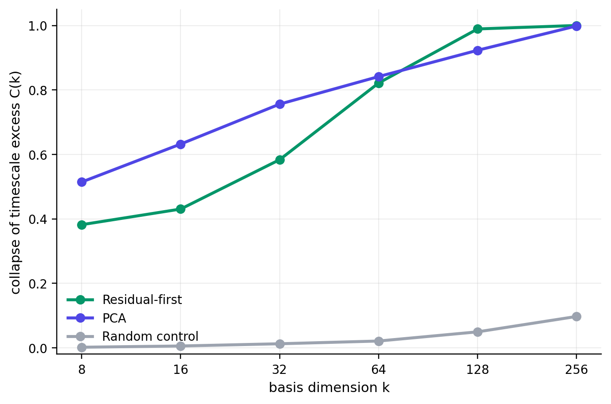
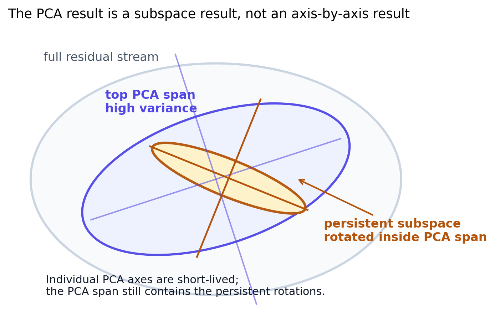
High variance and attention alignment are not enough
Section 6 established that the persistent directions live inside the top-256 PCA span. That raises an immediate question: what distinguishes them from the other directions that also live inside that span? In particular, the top PCA directions themselves are fully contained there by definition, and they occupy a region of the residual stream with high attention-head activity. If the persistent directions are inside the PCA span, and the top PCA directions are inside the PCA span, what property separates the two?
To answer this, we ran a stress test comparing five direction groups head-to-head: the top-31 persistent directions, 31 random directions, 31 low-lifetime time-lagged directions, the top-31 PCA directions, and 31 directions sampled uniformly at random from within the top-128 PCA span (Figure 6). For each group we measured two quantities: raw attention alignment (how strongly each direction projects onto the leading principal components of each attention head’s output), and M0 excess (how much that attention alignment exceeds what residual PCA alone would predict). The contrast between these two metrics is where the result lives.
On raw attention alignment, the top PCA directions score higher than the persistent directions. The median head-subspace projection norm is 0.208 for top PCA versus 0.187 for persistent. By this metric, the high-variance axes of the residual stream are more attention-aligned than the directions we identified as persistent.
On M0 excess, the picture reverses completely. The persistent directions have a median M0 excess of +0.116: they project onto attention-head output subspaces substantially more than residual PCA geometry predicts. The top PCA directions have a median M0 excess of −0.399: they project onto attention-head output subspaces less than residual PCA predicts, despite their higher raw alignment. The gap between the two groups is 0.52, larger than either group’s absolute value.
What M0 excess measures is the part of attention alignment that cannot be explained by generic residual anisotropy. The residual stream is not isotropic: it has a dominant high-variance subspace, and attention heads write into that subspace too. Raw alignment between a residual direction and an attention head’s output is therefore partly a consequence of both living in the same high-variance region, rather than a specific geometric relationship between them. M0 excess controls for this by subtracting the alignment you would expect from a direction’s position in the residual PCA spectrum. A positive excess means the direction is more specifically coupled to attention-head geometry than its residual-PCA containment alone would predict. A negative excess means the opposite: the alignment is more than accounted for by the shared high-variance subspace, and there is nothing specifically attention-like about the direction’s geometry beyond that.
The top PCA directions have negative M0 excess precisely because they are the high-variance residual axes, so their attention alignment is entirely explained by the fact that both they and attention outputs live in the high-variance region. The persistent directions, by contrast, have positive excess: their attention alignment is not fully explained by their PCA containment, which means they are specifically coupled to where attention heads write, over and above what their position in the variance spectrum would predict.
The random-in-PCA-span group closes the argument. These directions are, by construction, inside the top-128 PCA span, the same region as the persistent directions, but sampled without regard to persistence or attention geometry. Their M0 excess is −0.172: negative, like the top PCA directions, not positive like the persistent ones. Being inside the PCA span is necessary for persistence, as section 6 showed, but it is not sufficient. What additionally distinguishes the persistent directions is a specific geometric relationship to attention-head output subspaces that survives controlling for generic residual anisotropy.
Taken together, the two centerpiece results describe a set of directions that can only be identified by holding three properties jointly: they must be inside the high- variance PCA span, they must have positive attention-specific M0 excess, and they must be directly optimized for temporal stability. No pair of these three is enough. Variance alone finds the PCA directions: high raw alignment, negative M0 excess, no persistence. Attention alignment alone finds directions that are well-explained by shared high-variance geometry. Only the combination, surfaced by time-lagged probes and confirmed by the M0 stress test, recovers the persistent subspace.
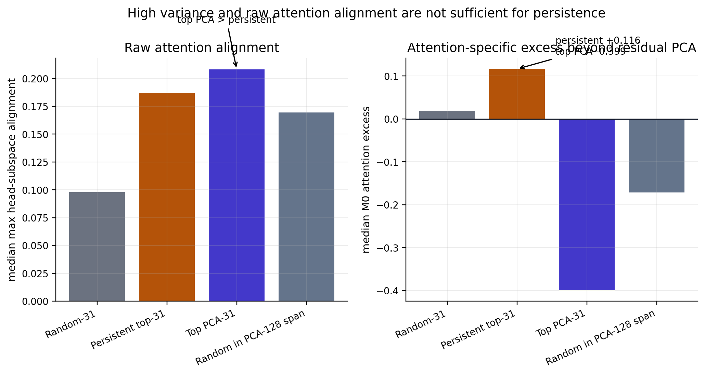
Attention alignment is robust and concentrated in late layers
Section 7 established that the persistent directions have positive M0 excess, meaning their attention alignment is not fully explained by shared residual anisotropy. Here we report how robust that excess is and where in the network it comes from.
The excess survives across all five residual-PCA control settings we tested (\(k \in \{0, 16, 32, 64, 128\}\) principal components removed before computing alignment). The estimated \(\Delta E_{\text{attn}}\) ranges from 0.081 to 0.107 across these settings, and the bootstrap 95% confidence intervals exclude zero at every level (see appendix, Figure 10). Removing more of the residual PCA structure does not close the gap; if anything, the excess becomes more stable at higher \(k\), where the residual directions are more cleanly orthogonalized from the dominant variance structure. The attention-specific geometric coupling of the persistent directions is not a residual-anisotropy artifact at any tested control strength.
The signal is concentrated in the latter portion of the network. Breaking down M0 excess by layer, the attention excess is positive and robust in layers 10, 11, and 12, which are the last three layers before the hook point, and weakest or absent in earlier layers (see appendix, Figure 11). Layer 11 shows strong attention excess at every control setting; layer 12 shows the strongest excess after residual-PCA control is applied. This late-layer concentration is consistent with a picture in which persistent geometric organization accumulates as information moves through the network, rather than being established in early layers and preserved unchanged.
MLP block outputs show a different pattern. Raw MLP excess is not positive, but after stronger residual-PCA controls (\(k = 32\)–\(128\)), a secondary late-layer MLP signal becomes detectable, particularly in layers 10–12. We report this without overinterpreting it: MLP involvement is plausible, but attention is the primary and more robust geometric signal at every control level.
What all of this establishes is geometric in nature. The persistent directions point in similar directions to where late attention heads write into the residual stream, and that similarity is not explained by shared high-variance geometry. This does not mean those heads create, maintain, or route the persistent signal. That is a causal question, and the geometric alignment result does not answer it. We address what we were and were not able to establish causally in the next section.
What we could not establish: causal routing
The geometric results in sections 6–8 raise a natural next question: do the attention heads whose outputs align with the persistent directions actually cause or maintain that persistence? Establishing this requires moving from geometry to intervention: measuring what happens to the persistent directions when specific heads are perturbed, or testing whether identified heads systematically route the persistent signal across token positions. We ran two tests toward this goal. Neither produced claim-level evidence.
The first was a locked transport test (M3): we asked whether the attention heads most geometrically aligned with the persistent directions route those directions’ projections across positions more than matched control heads do. The locked result was negative at the group level: the aligned-head group did not beat same-layer random controls. This does not mean the aligned heads play no causal role; it means that geometric alignment, as identified by our Stage 06 procedure, does not cleanly predict transport specificity at the group level. Some random-control heads matched or exceeded the transport signal of the aligned-head candidates.
Per-head exploratory analysis identified L12H7 and L12H6 as individually interesting: both show head-specific transport structure consistent with support and suppressive roles respectively. A separate exploratory ablation (M1-lite) found that ablating L12H7 and L11H0 reduced held-out persistence, while ablating L12H6 increased it. These patterns are suggestive of specific causal roles. They are not claim-level evidence because the head sets were selected from validation-stage diagnostics after the locked test ran, so the analysis is post-hoc, and the results cannot be treated as prospectively confirmed.
The clean boundary is this: the geometric results in sections 3–8 are supported by locked experiments on held-out data. The causal routing question is open. Answering it requires a prospectively locked follow-up with head sets declared before any validation data are examined, which is the planned next step for this line of work.
What the persistent directions appear to encode
The geometric results tell us that the persistent directions exist, where they live in the residual stream, and something about their relationship to attention-head geometry. They do not tell us what information those directions carry. As a first pass, we collected the highest-activating token windows for each of the top-31 directions from the validation split and read them. We call this qualitative exercise a semantic dossier. These are hypothesis-generating observations, not validated labels.
The clearest pattern is what the directions are not. They do not look like clean single-topic features of the kind that might fire on sports text or cooking text across any document that happens to mention those subjects. They look more like persistent document-state axes: directions that stay highly activated across long stretches of a document because the document’s register, formatting conventions, or source template remain constant, not because a particular word or concept keeps recurring (Figure 7).
Several directions have recognizable tentative patterns. The highest-lifetime direction (rank 1, \(\tau\) = 492) activates consistently on technical and instructional prose, including device configuration, software documentation, and networking setup. On the opposite end of its range, narrative, historical, and devotional text. Rank 3 activates on SEO-style product and catalog repetition; rank 5 on transactional and policy text (refund policies, supplier codes, terms of service); rank 9 on religious and scriptural prose; rank 29 on recipes and food writing; rank 31 on legal and regulatory text including GDPR-style disclosures. Others are harder to label cleanly from the sampled windows alone.
The span structure is consistent with the lifetime results. High-activation windows for these directions tend to be contiguous and long: the direction stays elevated across entire sections or documents rather than spiking at individual tokens and returning to baseline. A direction that activates on legal boilerplate stays activated for the entire clause structure of a legal document, not just at the word “hereinafter.” This is what a document-register axis would look like, and it is consistent with autocorrelation lifetimes in the range of tens to hundreds of token positions.
One direction warrants a separate note. Direction 11 is the single PCA probe in the top-31. Its activation scale is an order of magnitude larger than the time-lagged directions, and its top windows include document boundaries and formatting artifacts. It likely reflects broad residual variance and formatting structure rather than the kind of document-register state the time-lagged directions appear to track, and should not be interpreted alongside them.
These observations are grounded in the validation split only, and the labeling method is coarse, based on keyword and density checks on small samples of top-activated windows. The labels are noisy, overlapping, and in several cases not stable enough across samples to report with confidence. The honest summary is that the persistent subspace appears to track durable document register and source-template state rather than local lexical content, but that characterization has not been validated against held-out data with predeclared labels. That validation is the most direct next step for strengthening the semantic interpretation.
The picture that emerges
Across the preceding sections, a consistent geometric picture has taken shape. The layer-12 residual stream of Gemma-2-2B contains a compact, generalizing, nonredundant subspace of roughly 31 directions with autocorrelation lifetimes an order of magnitude longer than chance. That signal requires sequential context to exist, since it collapses under document permutation, and the directions that carry it appear to track durable document register and source-template state rather than local lexical content.
The geometry of that subspace is specific in two ways that are not obvious in advance. First, it lives inside the high-variance PCA span rather than outside it, at angles the principal components do not occupy. Second, it cannot be identified by high variance or raw attention alignment alone: the top PCA directions have both properties and yet have no persistence. What distinguishes the persistent directions is a positive attention-specific M0 excess, a geometric coupling to late attention-head outputs that survives controlling for generic residual anisotropy, concentrated in layers 10–12.
In the narrow sense suggested by section 1, this is a working-memory-like state geometry: a small set of directions that remain available across many token positions, embedded inside a much larger stream of fast-decaying computation. We found that geometry; we did not find evidence that specific attention heads causally maintain it, which is the question a follow-up experiment will address.
The scope of these results is deliberately narrow: one hook point (layer 12), one model (Gemma-2-2B), one corpus (C4). The pilot is clean and the findings are internally consistent, but whether the same structure appears across layers, models, and corpora is an open question, not an assumption.
Open questions
Semantic validation. The dossier observations in section 10 are grounded in validation-split qualitative analysis only. The most direct next step is to predefine a label set, including technical prose, legal/regulatory, product catalog, biomedical citation, devotional, and so on, then test whether the top-31 directions are enriched for those labels on held-out test projections. A positive result would elevate the register/template interpretation from hypothesis to evidence.
Causal routing. The geometric alignment between persistent directions and late attention-head outputs (sections 7–8) is consistent with those heads playing a causal role in writing or maintaining the persistent signal, but does not establish it. A prospectively locked transport and ablation experiment with head sets declared before any validation diagnostics are examined is the required next step for claim levels 7b and 8.
Cross-layer structure. We measured persistence at a single hook point. Whether the persistent subspace is stable across layers, meaning whether layers 8, 10, and 11 share the same ~31 directions, can be tested by computing subspace principal angles between layers. A stable subspace across the latter half of the network would suggest the persistent geometry is a global property of how the model organizes context, not a local artifact of a single layer.
Cross-model generalization. The same analysis applied to Llama, Mistral, and Pythia family models would test whether state-lifetime geometry is a general property of transformer residual streams or specific to Gemma’s architecture and training. A consistent structure across training setups would be a stronger result than the current single-model pilot.
Connection to sparse autoencoders. If the persistent directions project substantially onto known SAE features with established semantic interpretations, that would provide an independent route to characterizing what they carry, bridging the geometric characterization reported here with the feature-level characterization that SAE-based interpretability work has developed.
Appendix figures
The appendix figures are supporting diagnostics for the main narrative. They are included here to keep the post auditable without overloading the main argument.
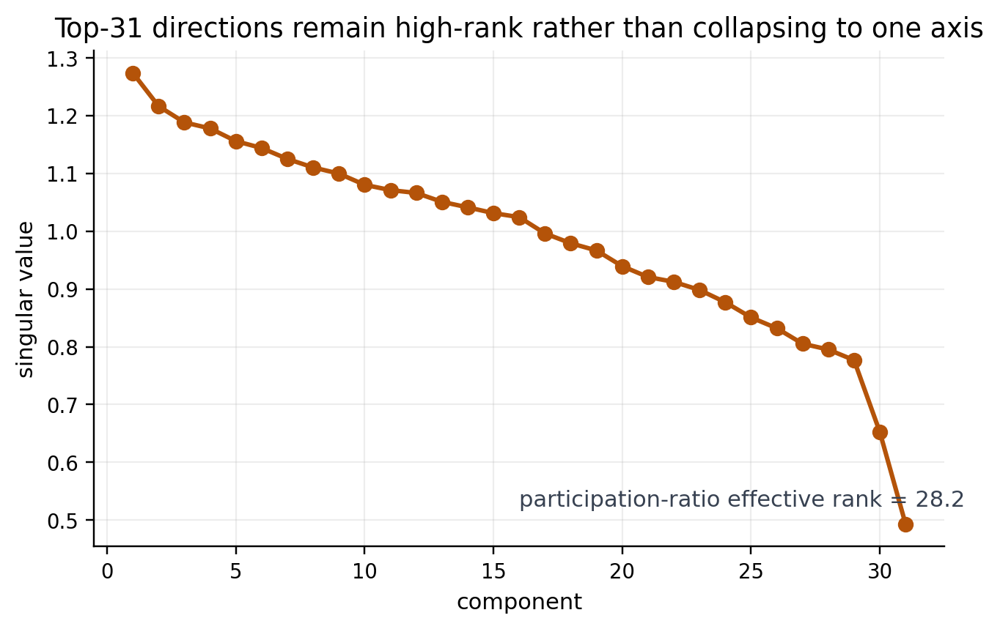
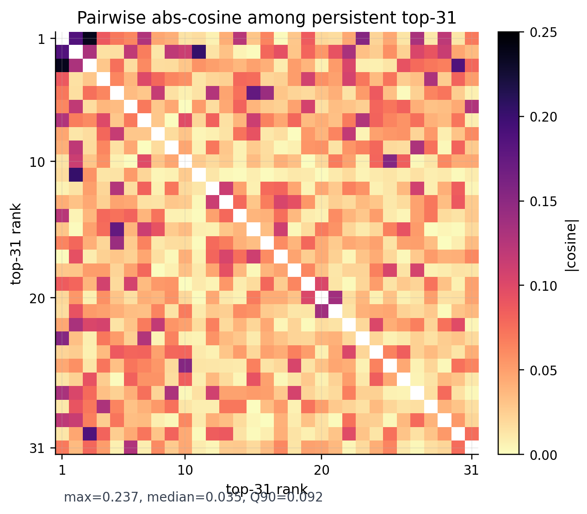
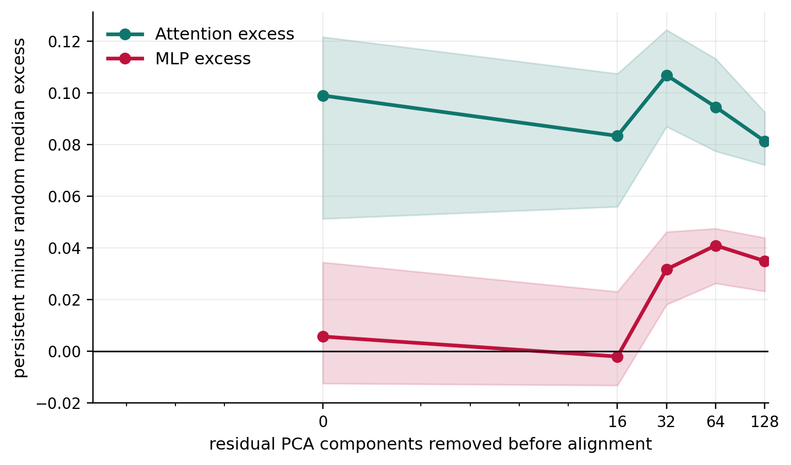
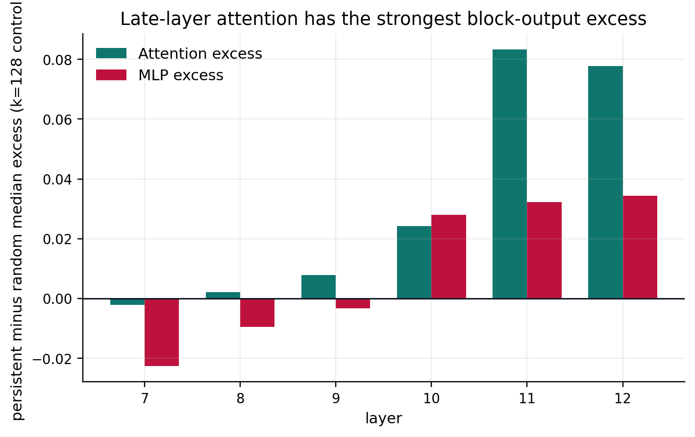
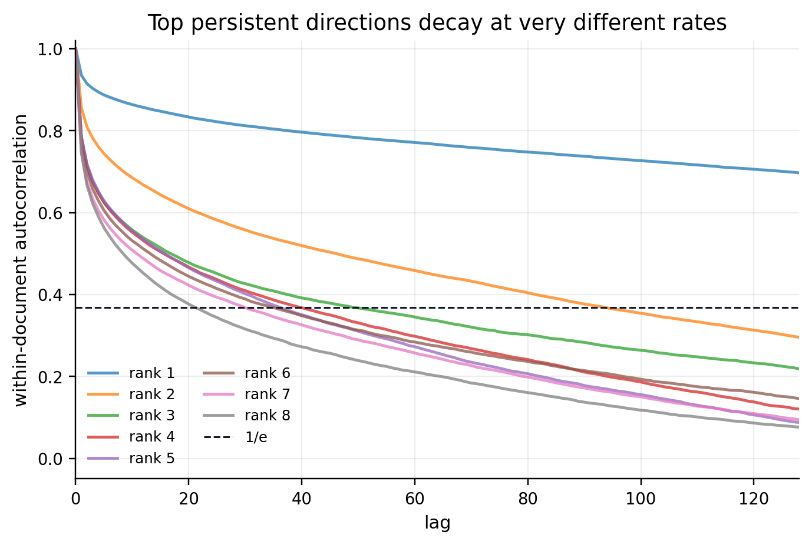